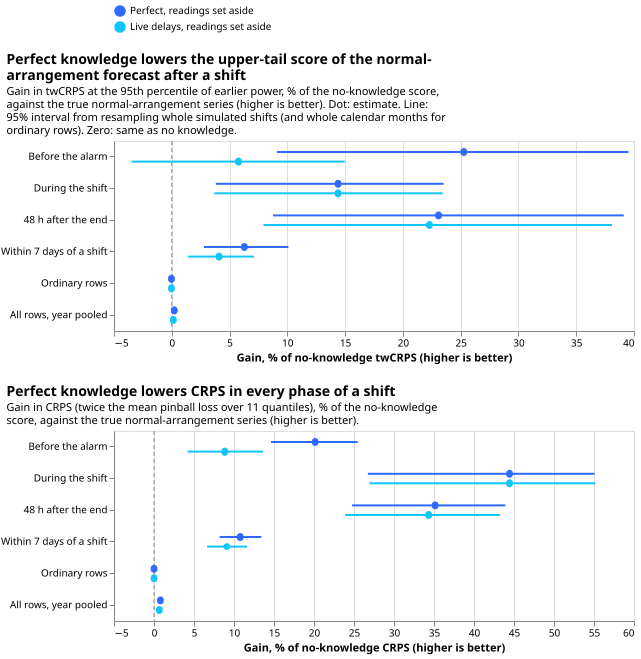
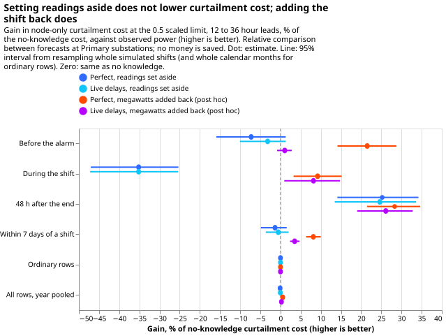
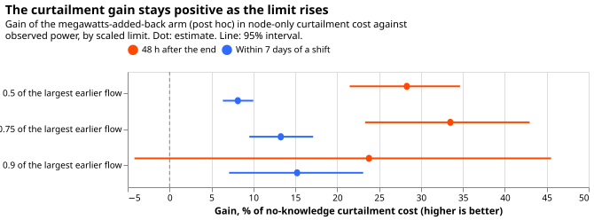
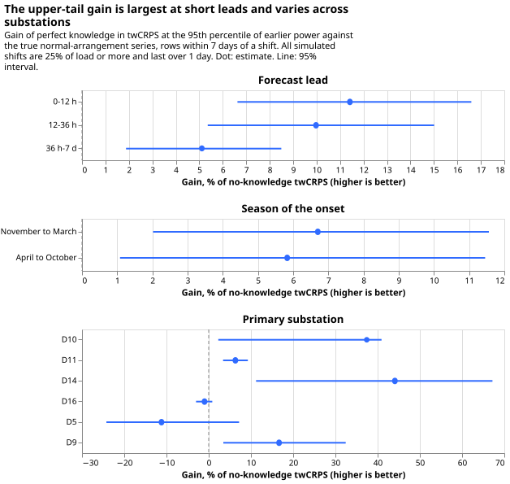
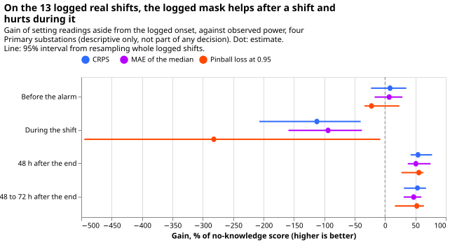

What is perfect knowledge of load shifts worth to MAE, CRPS, twCRPS and curtailment cost?
A load shift moves demand from one Primary substation to its neighbours for hours or days. Knowing every shift exactly lowers the forecast's error in the highest power values by 23.1% (95% interval 8.8% to 39.1%) in the 48 hours after the shift ends, and by under 1% over a whole year, because shifts are rare. That figure is the threshold-weighted continuous ranked probability score (twCRPS) against the power the substation would have carried in its normal running arrangement (NRA), as a share of the score of a forecast that knows nothing about the shift.
Curtailment cost is the cost of limiting generation when the flow at a substation would breach its limit. The design fixed before any score was read ignored the power readings recorded during a shift. Against observed power, which includes the shift, that design did not lower curtailment cost (-1.4%, -4.9% to +1.5%), so the curtailment prediction failed. A variant added after seeing the results adds the shift's known megawatts back to the forecast, and lowers cost by 8.1% (6.4% to 10.0%) within 7 days of a shift. The next step is to ask how good a detector of load shifts must be to keep that gain.
Question and method. A load shift moves demand from one Primary substation to its neighbours for
hours or days. We asked whether a forecast that knows every shift exactly, from its true start and
end, beats one that knows nothing (question 1 of the LSC decision
program). The forecasting model is the generalised additive model
with a Kalman filter on its recent errors of experiment
208, unchanged. We scored
411 simulated shifts (44 copies of the real 27-month power record, six Primary substations, stored
by experiment 141) on two targets: the true normal-arrangement (NRA) series, and observed power,
which includes the shift. Curtailment cost is the node-only metric of experiment
268 (studies.node_curtailment), at
a limit of 0.5 times the largest earlier power, 12 to 36 hour leads, GBP 2,000 per MWh.
Curtailment figures are relative comparisons between forecasts at a Primary substation and state no money saved. A Primary substation has no published export limit and no known generator beneath it, so the metric treats its demand as the flow that can breach, as experiment 277 did. Bulk supply points are not scored: experiment 271 found that few shifts cross a boundary and that the bulk-supply-point metric cannot value detection.
Gain over no knowledge, by row group
Each cell is the gain of perfect knowledge over no knowledge, as a percentage of the no-knowledge score, with a 95% interval; positive is better. Arms: PERFECT (true span known at the true onset, readings inside it set aside, end known at once) and PERFECT_LAG (the same span known after a live service's delays). The post hoc arms PERFECT_ADD and PERFECT_LAG_ADD subtract the span's megawatts from the readings and add the true megawatts back to the forecast at the target time once the span is known. Row groups: G1 ordinary rows (outside every shift, the 72 hours after it, and the 7 days either side of it); G2 before the alarm would arrive; G3 during the shift; G4 the 48 hours after its end; G5 within 7 days of a shift (G2 to G4 plus the margins); G0 all rows, with ordinary rows weighted 4 because every fourth daily run is scored.
| Group | twCRPS vs NRA, PERFECT | CRPS vs NRA, PERFECT | Cost vs observed, PERFECT | Cost vs observed, PERFECT_ADD (post hoc) |
|---|---|---|---|---|
| G0 all rows | +0.22 (+0.04 to +0.50) | +0.80 (+0.55 to +1.13) | -0.10 (-0.35 to +0.11) | +0.55 (+0.39 to +0.77) |
| G1 ordinary | -0.03 (-0.14 to +0.06) | +0.01 (-0.05 to +0.06) | -0.00 (-0.02 to +0.01) | -0.01 (-0.03 to +0.01) |
| G2 before alarm | +25.3 (+9.1 to +39.5) | +20.1 (+14.6 to +25.4) | -7.3 (-15.9 to +1.3) | +21.5 (+14.1 to +28.7) |
| G3 during | +14.4 (+3.8 to +23.5) | +44.4 (+26.7 to +55.1) | -35.2 (-47.0 to -25.3) | +9.2 (+3.2 to +15.2) |
| G4 after | +23.1 (+8.8 to +39.1) | +35.1 (+24.8 to +43.9) | +25.2 (+14.1 to +34.2) | +28.3 (+21.5 to +34.7) |
| G5 near | +6.3 (+2.8 to +10.1) | +10.8 (+8.2 to +13.4) | -1.4 (-4.9 to +1.5) | +8.1 (+6.4 to +10.0) |





Results
- Pre-registered prediction, part 1 held: the twCRPS gain in G4 against the true NRA series is +23.1% (8.8 to 39.1), above the 3% bar. PERFECT_LAG gains +22.3% (7.9 to 38.1).
- Part 2 failed: the curtailment gain against observed power in G5 at the 0.5 limit is -1.4% (-4.9 to +1.5) for PERFECT and -0.6% (-3.7 to +2.0) for PERFECT_LAG, so the interval includes zero and the curtailment-cost answer for the design fixed in advance is "not shown". The loss sits in G3 (-35.2%, -47.0 to -25.3): the forecast with readings set aside predicts the normal arrangement, while observed power includes the shift.
- Part 3, G0 and G1 under 0.5%: G1 changes by -0.03% (-0.14 to +0.06) in twCRPS and G0 by +0.22%. G0 CRPS changes by 0.80% (0.55 to 1.13), above the 0.5% limit, so that condition failed for CRPS; the rise comes from the shifts in the year and is not harm.
- Post hoc, megawatts added back: curtailment cost falls 8.1% (6.4 to 10.0) in G5 and 28.3% (21.5 to 34.7) in G4 at the 0.5 limit. With live delays the gains are 3.5% (2.4 to 4.7) and 26.1% (19.0 to 32.8). At the 0.75 limit PERFECT_ADD gains 13.3% (9.5 to 17.1) in G5, and at 0.9 it gains 15.2% (7.1 to 23.1); the sweep is figure 3.
- Absolute no-knowledge scores (points of effective capacity): CRPS against the NRA series is 4.14 in G4, 3.03 in G2, 4.62 in G3, and 2.71 on ordinary rows; the mean absolute error (MAE) of the median is 6.89 in G4 and 4.69 on ordinary rows.
- Real record, descriptive only: on 13 logged shifts at four Primary substations (experiment 208's stored scores, five stored quantiles, so twCRPS is replaced by pinball loss at 0.95), the logged mask lowers CRPS by 54.3% (42.1 to 77.4) in the 48 hours after 7 shifts and worsens it by 112% (40% to 207%) during 6 shifts. The real record resolves no curtailment difference (experiment 277).
- Substations differ: G5 twCRPS gain is +37.4% at D10, +44.1% at D14, +16.7% at D9, +6.3% at D11, -1.0% at D16, and -11.2% at D5 (figure 4). Gains fall with lead: 11.4% at 0 to 12 h, 10.0% at 12 to 36 h, 5.1% at 36 h to 7 d.
- Shift sizes are untested below 25% of load and under 1 day: every simulated shift is that large and that long, so the size and duration strata of the program cannot be scored. November to March gains 6.7% (2.0 to 11.6) and April to October 5.8% (1.1 to 11.5).
Checks
- Median minus mean forecast, per site: the mean absolute error of the median forecast minus that of the mean forecast lies between -0.019 and +0.008 points for every site and arm, and changes by under 0.005 points between K0 and PERFECT, so no arm's spread shifts its forecast (printed report).
- Mean forecast error beside each quantile-score contrast: in G5 against the NRA series the MAE of the mean gains 9.6% (7.5 to 11.7) beside the CRPS gain of 10.8%, the same direction. Against observed power the mean absolute error (MAE) of the median gains 1.7% (0.3 to 3.0) in G5 for PERFECT, while curtailment cost loses 1.4%; the difference is the G3 tail loss above.
- Triggers that fired: trigger 2 (the curtailment result contradicts its prediction) fired, and the megawatts-added-back arm is the tested explanation. Trigger 4 fired weakly: leaving out D11 moves the G4 twCRPS interval to -1.4% to +51.1% while the point estimate stays above 17% in all six leave-one-out runs. Trigger 7 fired because later steps compare detectors with these arms. A fresh Sonnet audit re-derived the headline contrasts from the stored scores with its own code and reproduced them (twCRPS +23.08%, 8.6 to 39.0; curtailment -1.36%, -4.83 to +1.57; megawatts added back +8.14%, 6.35 to 10.03). It found no leakage: the 1008 rows scored before a first onset that differ from K0 belong to one overlapping pair of shifts at D5. Its four caveats are listed under "Caveats", and we accepted all four.
- Cost metric check: the per-row node-only cost equals
studies.node_curtailment.node_curtailmenton one substation and one simulated world (GBP 32,468,687.88 both).
Caveats
- The megawatts-added-back arms are an upper bound. They add the true megawatts at the target time and stop at the true end of the shift, even when the forecast was issued before the end, so they know the future shape and end of the shift. The 8.1% (6.4 to 10.0) is therefore the most that perfect timing and size can deliver.
- The pre-registered curtailment prediction failed by construction. The readings-set-aside arm forecasts the normal arrangement and is scored against observed power, so it loses during a shift (-35.2%) whatever the value of the knowledge. The post hoc arm is the one that tests the question.
- The twCRPS bar is met overall but not robustly. Without D11, which supplies 106 of the 267 shifts that reach the 48-hour group, the gain is +17.8% (-1.4 to +51.1). Without D16 it is +32.7% (18.5 to 42.9).
- G0 and G1 are one test. Ordinary rows carry 93.3% of the weight of G0, and the ordinary intervals rest on 23 calendar months. About 10% of ordinary rows differ between K0 and PERFECT, because K0's filter still carries a past shift, and the net effect is zero within noise.
Arms and rows
- Arms: K0 (no knowledge of shifts; the filter reads all recent power); PERFECT and PERFECT_LAG (MASK design); post hoc PERFECT_ADD and PERFECT_LAG_ADD (SUB design plus true megawatts added back). Lab conditions: true megawatts known, spans known exactly.
- Rows: 411 simulated shifts in 44 simulated copies of the record, six Primary substations (D5, D9, D10, D11, D14, D16), 22.9 million weighted rows (1.54 million within 7 days of a shift, 5.34 million ordinary rows scored of every fourth daily run). Intervals resample whole simulated shifts, and whole calendar months for ordinary rows, 20,000 draws.
- Retraining schedule: none; the forecasts are experiment 208's cached member forecasts, so the contrast cannot depend on a schedule.
- Targets: observed power (real series plus the injected megawatts) and the true NRA series (real series); PERFECT_ADD arms are scored on observed power only.
- Quantiles: the node curtailment metric reads the 0.95 quantile of 11 stored quantiles; none cross, so sorting changes nothing.
- Data used: experiment 141's stored worlds, experiment 111 and 115's cached member forecasts and spreads, the cleaned power table before the first replicate row for limits and thresholds.
What to try next
- Step 5 of the program (do we need a detector at all?) should score its arms against both PERFECT and PERFECT_ADD, because the money answer differs by design.
- Step 6 (how good must a detector be?) should degrade PERFECT_ADD, since the megawatts need a detector that estimates size as well as timing.
- Shifts under 25% of load and under 1 day need new simulated worlds before a detector can be judged on them.